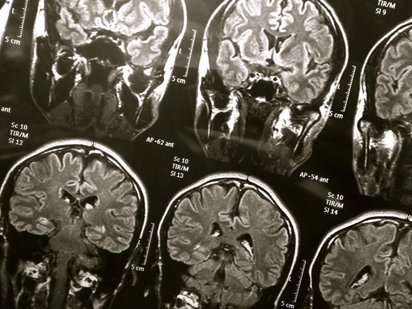
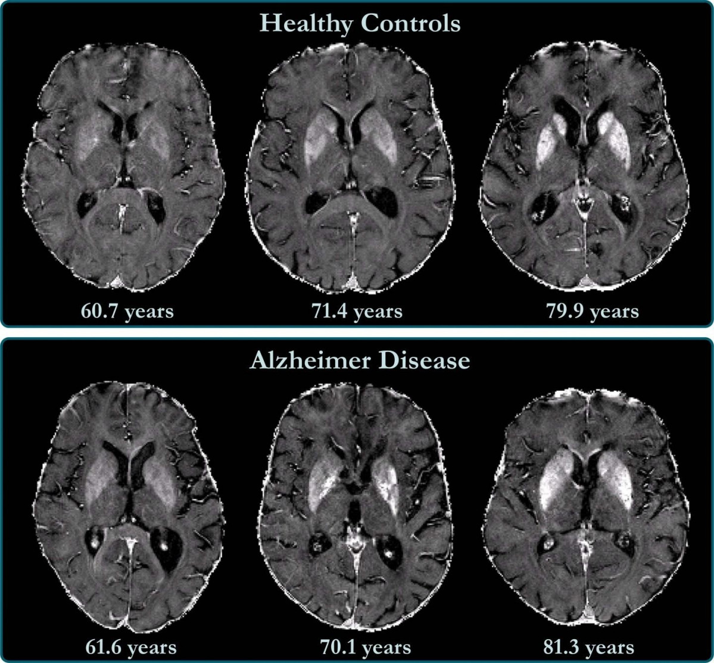
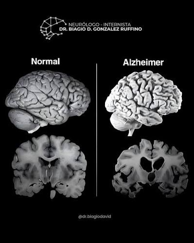
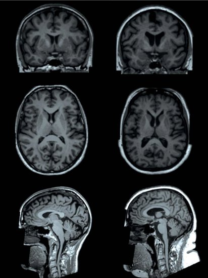

𝕬𝖑𝖟𝖍𝖊𝖎𝖒𝖊𝖗
¿Qué es exactamente el Alzheimer?
La enfermedad de Alzheimer es un trastorno neurodegenerativo. Eso significa que afecta progresivamente a las neuronas, las células que permiten al cerebro procesar información, almacenar recuerdos, controlar movimientos, comprender el lenguaje y regular las emociones.
Se considera la causa más frecuente de demencia.
Para entender la diferencia, hay que separar dos conceptos:
- Alzheimer: es una enfermedad específica que daña el cerebro.
- Demencia: es un síndrome, es decir, un conjunto de síntomas que afectan suficientemente la memoria, el pensamiento y otras capacidades mentales como para interferir con la vida cotidiana. Puede tener diferentes causas, entre ellas el Alzheimer.
Por tanto, no todas las personas con demencia tienen Alzheimer, aunque muchas sí.

Imagina que tu cerebro es una biblioteca gigantesca. En ella están guardados los recuerdos de tu infancia, el rostro de tus seres queridos, las palabras que utilizas, las habilidades que has aprendido y hasta la ruta que sigues para llegar a tu casa.
Ahora imagina que, poco a poco, algunos libros empiezan a desaparecer, que ciertas páginas dejan de poder leerse y que las conexiones entre las estanterías se deterioran. Al principio, quizá solo te cuesta encontrar un libro. Después, olvidas dónde está la biblioteca. Y, en etapas avanzadas, puedes llegar a no reconocer a las personas que más quieres.
Esta comparación nos ayuda a comprender una enfermedad que afecta a millones de personas en el mundo: el Alzheimer.
Pero hay algo importante que debemos entender desde el principio: una persona con Alzheimer no es simplemente alguien que olvida cosas. La enfermedad puede transformar su memoria, su lenguaje, su personalidad, su capacidad para tomar decisiones y, finalmente, su independencia para realizar actividades cotidianas.
A lo largo de esta guía conocerás qué es, qué ocurre dentro del cerebro, cuáles son sus etapas, qué síntomas produce, cómo se diagnostica, qué factores pueden favorecer su aparición, qué tratamientos existen y cómo se vive con ella.

¿Qué sucede dentro del cerebro?
En el cerebro de una persona con Alzheimer ocurren cambios biológicos complejos. Dos de los más estudiados están relacionados con proteínas llamadas beta-amiloide y tau.
1. Se acumula la proteína beta-amiloide.
Esta proteína puede formar depósitos llamados placas amiloides entre las neuronas. Su presencia se relaciona con los procesos que desencadenan la enfermedad, aunque las placas por sí solas no explican todo lo que sucede.
2. La proteína tau se altera.
En condiciones normales, tau contribuye a mantener la estructura interna de las neuronas. En el Alzheimer puede modificarse y formar ovillos neurofibrilares dentro de las células, dificultando su funcionamiento.
3. Las neuronas pierden conexiones y dejan de funcionar correctamente.
Las neuronas se comunican mediante conexiones llamadas sinapsis. A medida que estas conexiones se deterioran, al cerebro le cuesta más procesar y recuperar información.
4. Algunas neuronas mueren y el tejido cerebral se reduce.
Este proceso se conoce como atrofia cerebral. Puede afectar especialmente al hipocampo, una región fundamental para formar recuerdos nuevos, y posteriormente a otras áreas relacionadas con el lenguaje, la orientación, el razonamiento y el comportamiento.
En resumen: el Alzheimer no consiste simplemente en que los recuerdos se borren de golpe. Es un proceso biológico progresivo que altera las redes cerebrales necesarias para aprender, recordar y desenvolverse en el mundo.

¿Cuáles son las etapas del Alzheimer?
El Alzheimer no aparece de un día para otro. Normalmente avanza durante años, aunque la velocidad y los síntomas varían mucho de una persona a otra.
Una forma sencilla de entenderlo es dividirlo en tres grandes etapas: leve, moderada y grave. Para describirlo con más precisión, también podemos hablar de siete fases clínicas aproximadas.
Etapa 1. Sin síntomas perceptibles
Fase preclínica
El cerebro puede presentar cambios biológicos relacionados con el Alzheimer antes de que la persona note algo extraño. Puede seguir trabajando, conversando, conduciendo y llevando su vida con normalidad.
¿Qué siente la persona? Puede no sentir absolutamente nada. Tener estos cambios biológicos no significa que necesariamente vaya a desarrollar síntomas en un plazo determinado.
Etapa 2. Olvidos subjetivos
Cambios muy sutiles
La persona empieza a notar que su memoria no funciona como antes. Puede tardar más en recordar un nombre o preguntarse si ya contó una historia.
¿Qué siente? Frustración, preocupación o la impresión de estar más distraída. Estos cambios también pueden aparecer por estrés, falta de sueño, ansiedad u otras causas, así que no confirman Alzheimer.
Etapa 3. Deterioro cognitivo leve
Dificultades detectables
Los familiares pueden notar que la persona repite preguntas, pierde objetos con frecuencia o tiene dificultades para aprender información nueva. Una evaluación puede revelar problemas que antes pasaban desapercibidos.
¿Qué puede hacer todavía? Muchas personas siguen siendo independientes, aunque necesitan más esfuerzo, recordatorios o herramientas de organización.
El deterioro cognitivo leve no siempre evoluciona a demencia y puede tener causas distintas del Alzheimer.
Etapa 4. Alzheimer leve
Demencia leve
Los olvidos comienzan a interferir con las actividades diarias. La persona puede tener problemas para organizar las cuentas, planificar un viaje, preparar una receta complicada o recordar conversaciones recientes.
¿Qué siente? Puede darse cuenta de sus errores y sentir vergüenza, irritación o miedo. Algunas personas intentan ocultar sus dificultades para no preocupar a su familia.
Etapa 5. Alzheimer moderado inicial
Más ayuda cotidiana
La persona puede olvidar su dirección, confundirse con la fecha, necesitar ayuda para elegir la ropa adecuada o tener dificultades para manejar dinero y medicamentos.
¿Qué cambia? Empieza a necesitar supervisión más regular. Puede recordar muchos acontecimientos antiguos, pero perder detalles importantes de su situación actual.
Etapa 6. Alzheimer moderado avanzado
Dependencia importante
Puede olvidar nombres de familiares cercanos, desorientarse incluso en lugares conocidos, necesitar ayuda para bañarse o vestirse y experimentar cambios importantes de conducta.
¿Qué puede suceder? Aparecen dificultades para dormir, inquietud, sospechas infundadas, deambulación o episodios de agitación. No todas las personas presentan estos síntomas.
Etapa 7. Alzheimer grave
Dependencia extensa
La persona puede perder gran parte de su capacidad para conversar, reconocer su entorno, caminar sin ayuda, mantener el equilibrio o tragar de forma segura.
¿Qué necesita? Atención continua, ayuda para prácticamente todas las actividades básicas y vigilancia de la alimentación, hidratación, piel y posibles infecciones.
Las siete fases son un modelo orientativo, no una escalera exacta que todos deban subir en el mismo orden. Los cambios pueden superponerse y una persona puede conservar algunas capacidades mientras pierde otras.
¿Qué causa el Alzheimer?
La respuesta científica es que no existe una única causa conocida para la mayoría de los casos. Lo más probable es que intervenga una combinación de procesos biológicos, predisposición genética, edad y factores que influyen en la salud cerebral.
Los principales factores de riesgo
1. La edad
Es el factor de riesgo más importante conocido. La enfermedad es mucho más frecuente a partir de los 65 años, y el riesgo aumenta con la edad. Sin embargo, envejecer no significa necesariamente desarrollar Alzheimer.
2. La genética y los antecedentes familiares
Tener un padre, una madre o un hermano con Alzheimer puede aumentar el riesgo, pero no significa que vayas a padecerlo. Una variante genética llamada APOE ε4 se asocia con mayor riesgo, aunque no determina el destino de una persona.
Existen mutaciones hereditarias poco frecuentes, como las relacionadas con APP, PSEN1 y PSEN2, que pueden causar formas familiares de inicio temprano.
3. La salud cardiovascular
La hipertensión, la diabetes, el colesterol elevado, el tabaquismo, la obesidad y la falta de actividad física pueden contribuir al riesgo de deterioro cognitivo y demencia.
El cerebro depende de un suministro adecuado de sangre y oxígeno. Por eso, cuidar el corazón también ayuda a proteger la salud cerebral.
4. El sueño y la salud mental
Dormir mal de forma persistente, sufrir depresión o tener apnea del sueño puede afectar la memoria y la atención. Algunas de estas condiciones también se asocian con mayor riesgo de deterioro a largo plazo.
No significa que padecer insomnio o depresión provoque necesariamente Alzheimer; significa que conviene identificar y tratar estos problemas.
5. La actividad física, la audición y la vida social
El sedentarismo, la pérdida auditiva no tratada, el aislamiento social y determinados factores ambientales se relacionan con el riesgo de demencia. Mantenerse activo, tratar los problemas auditivos y participar en actividades sociales son medidas razonables para cuidar el cerebro.
Estos factores no tienen todos el mismo peso ni prueban que una persona desarrollará la enfermedad. Muchos casos aparecen sin antecedentes familiares evidentes y en personas que han mantenido hábitos saludables.
¿El Alzheimer se hereda?
Hay que distinguir dos situaciones:
- La mayoría de los casos: no siguen un patrón hereditario simple. Los genes pueden influir, pero también intervienen otros factores.
- Las formas familiares raras: determinadas mutaciones pueden causar Alzheimer de inicio temprano y transmitirse entre generaciones.
Si varios familiares han desarrollado la enfermedad a edades inusualmente tempranas, un médico puede valorar si conviene una consulta de asesoramiento genético.
No se recomienda interpretar una prueba genética por cuenta propia: un resultado de riesgo no confirma que tengas Alzheimer, y un resultado negativo tampoco elimina todos los riesgos.
¿El Alzheimer aparece por pensar demasiado, por usar el celular o por estudiar poco?
No hay pruebas sólidas de que pensar demasiado, usar normalmente el teléfono móvil o estudiar poco sean causas directas del Alzheimer.
La educación y la estimulación intelectual pueden influir en la reserva cognitiva, es decir, en la capacidad del cerebro para mantener el funcionamiento pese a ciertos daños. Pero eso no significa que una persona con menos estudios haya causado su enfermedad.
Tampoco se debe culpar a quien la padece por su alimentación, su carácter o su estilo de vida. El Alzheimer es una enfermedad compleja, no un castigo por haber vivido de determinada manera.
¿Qué siente una persona con Alzheimer? ¿Se da cuenta de lo que le pasa?
No hay una única respuesta, porque depende de la persona y de la etapa.
En las primeras etapas
Muchas personas son conscientes de sus dificultades. Pueden sentir miedo al olvidar una conversación, frustración por cometer errores o tristeza al notar que necesitan ayuda con tareas que antes dominaban.
Algunas evitan reuniones para que nadie se dé cuenta. Otras bromean sobre sus olvidos o se esfuerzan por mantener sus rutinas.
En las etapas intermedias
La conciencia de la enfermedad puede fluctuar. Una persona puede reconocer que tiene problemas por la mañana y negarlos por la tarde. También puede interpretar los errores de memoria como si alguien hubiera movido sus pertenencias.
Esto no significa necesariamente que quiera engañar a su familia. Puede no recordar el acontecimiento que permitiría comprender su error.
En las etapas avanzadas
Puede disminuir la capacidad para comprender el diagnóstico o explicar lo que se siente. Sin embargo, eso no significa que desaparezcan todas las emociones.
Una persona que ya no reconoce verbalmente a su hija puede tranquilizarse al escuchar su voz. Alguien que no consigue expresar dolor puede mostrarlo mediante gestos, tensión corporal o cambios de conducta.
Es importante no asumir que una persona ha perdido toda su capacidad de sentir, disfrutar o relacionarse simplemente porque ya no puede comunicarse como antes.
¿Puede olvidar a sus hijos o a su pareja?
Sí, puede llegar a no reconocerlos de forma consistente, especialmente en etapas avanzadas. Pero el reconocimiento no es siempre absoluto: puede haber momentos de conexión y otros de confusión.
Además, reconocer a alguien no es únicamente recordar su nombre. Una persona puede no identificar verbalmente a un familiar y, aun así, sentirse tranquila con su presencia, responder a su voz o disfrutar de una caricia consentida.
Por eso, el vínculo afectivo puede seguir teniendo valor incluso cuando los recuerdos conscientes cambian.

¿Cómo cuidar a alguien que tiene Alzheimer?
Cuidar a una persona con Alzheimer puede ser física y emocionalmente exigente. Una de las cosas más importantes es aprender a interpretar su comportamiento desde la enfermedad y no como una provocación deliberada.
Cinco principios que ayudan mucho
- Habla despacio y con frases sencillas. Haz una pregunta a la vez y permite que la persona tenga tiempo para responder. Evita darle muchas instrucciones simultáneamente.
- No conviertas cada error de memoria en una discusión. Si pregunta repetidamente por alguien que falleció, puedes reconocer su preocupación y ofrecerle tranquilidad en vez de insistir en que está equivocada.
- Conserva su autonomía tanto como sea posible. Deja que se vista, coma o participe en tareas mientras pueda hacerlo de forma segura. Ayudar no significa hacer absolutamente todo por ella.
- Adapta la casa. Reduce los riesgos de caídas, guarda de forma segura los productos peligrosos, revisa la cocina y organiza los medicamentos con ayuda responsable.
- Cuida también a quien cuida. Reparte responsabilidades, pide ayuda y busca periodos de descanso. El agotamiento del cuidador puede perjudicar tanto su salud como la calidad de los cuidados.
¿Qué hacer cuando se enoja o se pone agresiva?
Lo primero es buscar la causa. A veces la agitación aparece porque la persona tiene dolor, hambre, sed, frío, estreñimiento, una infección, miedo o demasiados estímulos.
Prueba a reducir el ruido, hablar con calma, darle espacio y ofrecer una actividad familiar. No la sujetes ni la confrontes salvo que exista una necesidad de seguridad que requiera intervención adecuada.
Si el comportamiento aparece de repente, empeora mucho o supone un peligro, hay que solicitar valoración médica. No debe darse por hecho que todo cambio de conducta es simplemente parte del Alzheimer.
¿Qué pasa cuando ya no reconoce a su familia?
Es una de las experiencias más dolorosas para los seres queridos. Puede sentirse como perder a alguien que todavía está físicamente presente.
Pero la relación no tiene que desaparecer por completo. Se puede seguir ofreciendo compañía, música, contacto afectuoso consentido, comidas agradables y momentos de calma. La persona puede responder emocionalmente incluso cuando no logra identificar quién está con ella.
Y recuerda algo esencial: la dignidad de una persona no depende de lo que recuerde. Sigue mereciendo respeto, paciencia, intimidad y la posibilidad de disfrutar de la vida.
- Instituto Nacional sobre el Envejecimiento (NIA): Hoja informativa sobre la enfermedad de Alzheimer en español .
- Organización Mundial de la Salud (OMS): Información sobre la demencia, sus factores de riesgo y prevención .
- MedlinePlus: Información médica sobre el Alzheimer .
- Alzheimer's Association: Síntomas, diagnóstico, etapas y apoyo a cuidadores .